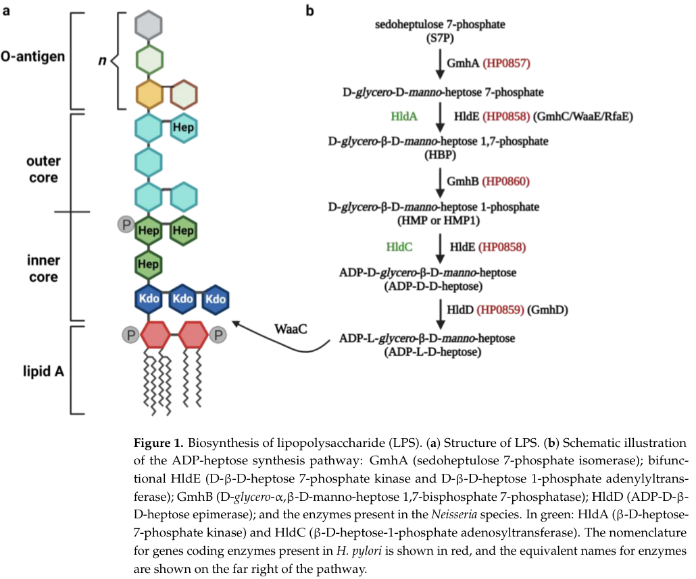

gmhB encodes D-glycero-beta-D-manno-heptose-1,7-bisphosphate 7-phosphatase for ADP-heptose and LPS core biosynthesis.
| GO Term | Evidence | Action | Reason |
|---|---|---|---|
|
GO:0005737
cytoplasm
|
IEA
GO_REF:0000044 |
KEEP AS NON CORE |
Summary: Cytoplasm is expected context for GmhB but not the defining activity.
Reason: The core function is the HBP phosphatase reaction in heptose/LPS precursor biosynthesis.
Supporting Evidence:
file:PSEPK/gmhB/gmhB-uniprot.txt
SUBCELLULAR LOCATION: Cytoplasm
file:PSEPK/gmhB/gmhB-goa.tsv
GO:0005737 cytoplasm
file:PSEPK/gmhB/gmhB-deep-research-falcon.md
This strongly implies that GmhB acts in the **cytosolic** compartment where these metabolites are made and processed, with downstream glycosyltransfer steps contributing to envelope assembly.
|
|
GO:0005975
carbohydrate metabolic process
|
IEA
GO_REF:0000002 |
MARK AS OVER ANNOTATED |
Summary: Carbohydrate metabolic process is too broad for GmhB.
Reason: The ADP-L-glycero-beta-D-manno-heptose biosynthetic process annotation is more specific.
Supporting Evidence:
file:PSEPK/gmhB/gmhB-uniprot.txt
ADP-L-glycero-beta-D-manno-heptose biosynthesis
file:PSEPK/gmhB/gmhB-goa.tsv
GO:0005975 carbohydrate metabolic process
file:PSEPK/gmhB/gmhB-deep-research-falcon.md
GmhB occupies the third step of the conserved five-step ADP-heptose biosynthesis pathway supplying heptose for LPS inner-core assembly
|
|
GO:0016791
phosphatase activity
|
IEA
GO_REF:0000002 |
MARK AS OVER ANNOTATED |
Summary: Phosphatase activity is a broad parent of the exact heptose-bisphosphate phosphatase activity.
Reason: GO:0034200 captures the substrate and reaction position and should be used for core function.
Supporting Evidence:
file:PSEPK/gmhB/gmhB-uniprot.txt
removing the phosphate group at the C-7 position
file:PSEPK/gmhB/gmhB-goa.tsv
GO:0016791 phosphatase activity
file:PSEPK/gmhB/gmhB-deep-research-falcon.md
Supports annotation of Q88RS0 as an HBP 7-phosphatase rather than a generic phosphatase; consistent with UniProt name for PP_0059.
|
|
GO:0034200
D-glycero-beta-D-manno-heptose 1,7-bisphosphate 7-phosphatase activity
|
IEA
GO_REF:0000120 |
ACCEPT |
Summary: The IEA GO:0034200 row is the exact catalytic function for GmhB.
Reason: UniProt assigns EC 3.1.3.82 and describes the beta-HBP 7-phosphatase reaction.
Supporting Evidence:
file:PSEPK/gmhB/gmhB-uniprot.txt
removing the phosphate group at the C-7 position
file:PSEPK/gmhB/gmhB-goa.tsv
GO:0034200 D-glycero-beta-D-manno-heptose 1,7-bisphosphate 7-phosphatase activity
file:PSEPK/gmhB/gmhB-deep-research-falcon.md
**GmhB** is defined as **D-glycero-β-D-manno-heptose 1,7-bisphosphate 7-phosphatase**, i.e., an enzyme that **removes the 7-phosphate from HBP** to produce **heptose-1-phosphate (HMP/HMP1)**.
|
|
GO:0009244
lipopolysaccharide core region biosynthetic process
|
IEA
GO_REF:0000041 |
ACCEPT |
Summary: LPS core region biosynthesis is a direct downstream pathway for the ADP-heptose precursor made by GmhB.
Reason: UniProt links GmhB to bacterial outer membrane LPS core biosynthesis.
Supporting Evidence:
file:PSEPK/gmhB/gmhB-uniprot.txt
LPS core biosynthesis
file:PSEPK/gmhB/gmhB-goa.tsv
GO:0009244 lipopolysaccharide core region biosynthetic process
file:PSEPK/gmhB/gmhB-deep-research-falcon.md
Thus, GmhB is best annotated as an enzyme of **LPS inner-core heptose donor biosynthesis**, rather than a signaling enzyme.
|
|
GO:0097171
ADP-L-glycero-beta-D-manno-heptose biosynthetic process
|
IEA
GO_REF:0000041 |
ACCEPT |
Summary: ADP-L-glycero-beta-D-manno-heptose biosynthesis is the specific pathway containing GmhB.
Reason: UniProt places GmhB at step 2/4 of ADP-heptose biosynthesis from D-glycero-beta-D-manno-heptose 7-phosphate.
Supporting Evidence:
file:PSEPK/gmhB/gmhB-uniprot.txt
ADP-L-glycero-beta-D-manno-heptose from D-
file:PSEPK/gmhB/gmhB-goa.tsv
GO:0097171 ADP-L-glycero-beta-D-manno-heptose biosynthetic process
file:PSEPK/gmhB/gmhB-deep-research-falcon.md
GmhB occupies the third step of the conserved five-step ADP-heptose biosynthesis pathway supplying heptose for LPS inner-core assembly
|
|
GO:0034200
D-glycero-beta-D-manno-heptose 1,7-bisphosphate 7-phosphatase activity
|
EXP
PMID:25848029 Panoramic view of a superfamily of phosphatases through subs... |
ACCEPT |
Summary: The EXP GO:0034200 row experimentally supports the exact GmhB catalytic function.
Reason: The curated UniProt entry cites PMID:25848029 for the beta-HBP 7-phosphatase reaction.
Supporting Evidence:
file:PSEPK/gmhB/gmhB-uniprot.txt
EC=3.1.3.82
file:PSEPK/gmhB/gmhB-goa.tsv
GO:0034200 D-glycero-beta-D-manno-heptose 1,7-bisphosphate 7-phosphatase activity
|
Q: Does KT2440 GmhB prefer Mg(2+) or alternative metals under physiological conditions?
Experiment: Measure purified GmhB activity against beta-HBP with Mg(2), Zn(2), and other divalent metals and test LPS core defects in a gmhB knockout.
Type: enzyme cofactor panel and LPS profiling
The research report should be a detailed narrative explaining the function, biological processes, and localization of the gene product. Citations should be given for all claims.
You should prioritize authoritative reviews and primary scientific literature when conducting research. You can supplement
this with annotations you find in gene/protein databases, but these can be outdated or inaccurate.
We are specifically interested in the primary function of the gene - for enzymes, what reaction is catalyzed, and what is the substrate specificity? For transporters, what is the substrate? For structural proteins or adapters, what is the broader structural role? For signaling molecules, what is the role in the pathway.
We are interested in where in or outside the cell the gene product carries out its function.
We are also interested in the signaling or biochemical pathways in which the gene functions. We are less interested in broad pleiotropic effects, except where these elucidate the precise role.
Include evidence where possible. We are interested in both experimental evidence as well as inference from structure, evolution, or bioinformatic analysis. Precise studies should be prioritized over high-throughput, where available.
The target protein is UniProt Q88RS0, annotated in Pseudomonas putida KT2440 as GmhB, a D-glycero-β-D-manno-heptose-1,7-bisphosphate 7-phosphatase (HBP phosphatase), EC 3.1.3.82 (sometimes reported as 3.1.3.82/83). In the retrieved literature, GmhB is consistently used for the enzyme that dephosphorylates HBP in the ADP-heptose biosynthesis pathway that supplies heptose residues to the LPS inner core. This functional identity is explicitly stated in multiple sources, including a Pseudomonas-focused genetics study that also lists the EC number. (yang2022analysisofthe pages 5-7, sidor2023abittersweetkiss pages 2-3)
Critical limitation (organism-specificity): within the available retrieved sources, I did not obtain a primary article that directly studies Q88RS0 / PP_0059 in P. putida KT2440. Therefore, KT2440-specific statements below are limited to (i) the UniProt-provided identity you supplied and (ii) carefully qualified inference by homology supported by experimental work in other Gram-negative bacteria, including Pseudomonas aeruginosa and Enterobacterales. (yang2022analysisofthe pages 5-7, mobley2024fitnessfactorgenes pages 24-25)
Gram-negative LPS consists of lipid A, a core oligosaccharide (inner + outer core), and often an O-antigen polysaccharide. The inner core is relatively conserved and commonly includes Kdo and heptose sugars; disruption of LPS core assembly can increase sensitivity to hostile conditions (e.g., detergents/antibiotics) and alter bacterial fitness. (sidor2023abittersweetkiss pages 1-2, sidor2023abittersweetkiss pages 2-3)
ADP-heptose (and related ADP-heptose stereoisomers) are activated sugar donors used to build LPS heptose-containing core structures. A widely conserved five-step pathway is described for E. coli and many other Gram-negative bacteria: GmhA converts sedoheptulose-7-phosphate (S7P) to heptose-7-phosphate; HldE (or in some taxa HldA/HldC) generates HBP; GmhB dephosphorylates HBP to HMP/HMP1; HldE adenylates HMP to ADP-D,D-heptose; and HldD epimerizes to ADP-L,D-heptose. The heptose is then transferred into LPS core by a heptosyltransferase (e.g., WaaC in the summarized pathway). (sidor2023abittersweetkiss pages 2-3, sidor2023abittersweetkiss pages 3-5)
GmhB is defined as D-glycero-β-D-manno-heptose 1,7-bisphosphate 7-phosphatase, i.e., an enzyme that removes the 7-phosphate from HBP to produce heptose-1-phosphate (HMP/HMP1). (sidor2023abittersweetkiss pages 2-3, faass2023innatehumancell pages 22-24)
The key biochemical step is:
D-glycero-β-D-manno-heptose 1,7-bisphosphate (HBP) → D-glycero-β-D-manno-heptose 1-phosphate (HMP/HMP1) + Pi
This reaction is described as dephosphorylation at the C-7 position of HBP by GmhB. (sidor2023abittersweetkiss pages 2-3, faass2023innatehumancell pages 22-24)
GmhB acts upstream of ADP-heptose formation: after HBP is generated by upstream heptose-kinase activity, dephosphorylation to HMP allows subsequent adenylation (by HldE in the canonical scheme) to yield ADP-heptose, which is then incorporated into the LPS core. Thus, GmhB is best annotated as an enzyme of LPS inner-core heptose donor biosynthesis, rather than a signaling enzyme. (sidor2023abittersweetkiss pages 2-3, sidor2023abittersweetkiss pages 3-5)
A pathway schematic showing the GmhB-catalyzed step (HBP → HMP/HMP1) is provided in the review figure extracted here. (sidor2023abittersweetkiss media cc0be430)
A 2024 enzyme-characterization study in Vibrio cholerae and Vibrio parahaemolyticus explicitly treats GmhB homologs as HBP phosphatases and shows that reconstituted enzyme sets (GmhA + GmhB + HldE) convert S7P → ADP-D,D-manno-heptose, and that hybrid combinations with E. coli enzymes also work with comparable efficiencies, supporting strong conservation of function across Proteobacteria. (shi2024characterizationofthe pages 6-7)
Quantitative data from the reconstitution: with 200 µM S7P, about 64–80 µM ADP-D,D-manno-heptose was produced after 2 h at 30°C, pH 8.0, depending on the enzyme set (Vibrio vs E. coli). While this measurement is for the multi-enzyme pathway output (not a purified kinetic constant for GmhB alone), it provides experimental support that the phosphatase step is functional and interchangeable in the pathway context. (shi2024characterizationofthe pages 6-7)
Substrate specificity/kinetics: The retrieved corpus did not provide Km/kcat values specifically for GmhB (most kinetic effort in the 2024 study excerpt is reported for HldE). Therefore, substrate-specificity beyond HBP (and the required pathway role) cannot be quantified here without additional primary sources. (shi2024characterizationofthe pages 6-7)
The ADP-heptose pathway intermediates described (S7P, HBP, HMP/HMP1, ADP-heptose) are soluble sugar phosphates / nucleotide sugars, which are generated prior to transfer into LPS. This strongly implies that GmhB acts in the cytosolic compartment where these metabolites are made and processed, with downstream glycosyltransfer steps contributing to envelope assembly. However, no direct subcellular localization experiment for P. putida KT2440 GmhB (Q88RS0) is present in the retrieved evidence set, so localization in KT2440 should be treated as pathway-based inference rather than proven for this strain. (sidor2023abittersweetkiss pages 2-3, sidor2023abittersweetkiss pages 3-5)
A 2022 Applied and Environmental Microbiology study on a conditional lethal allele of PA0006 in P. aeruginosa provides the most directly relevant Pseudomonas evidence available here.
Key findings:
- E. coli gmhB (annotated there as D-glycero-β-D-manno-heptose 1,7-bisphosphate 7-phosphatase, EC 3.1.3.82/83) is stated to participate in the ADP-heptose pathway used for LPS inner core precursor biosynthesis. (yang2022analysisofthe pages 5-7)
- E. coli GmhB shares 32.4% identity over 191 residues with PA0006p, and induced expression of E. coli gmhB rescues lethality of the PA0006(Ts) mutant at restrictive temperature, functionally validating homology at the level of physiological role. (yang2022analysisofthe pages 5-7)
- At restrictive temperature, PA0006(Ts) shows loss of wild-type-like core oligosaccharide and diminished/absent B-band O-antigen; overexpression of E. coli gmhB restores wild-type-like core LPS and O-antigen attachment, consistent with a conserved role in core LPS biogenesis. (yang2022analysisofthe pages 5-7)
Interpretation for P. putida KT2440 Q88RS0: While not direct evidence for KT2440, this Pseudomonas-to-E. coli complementation is strong support that a Pseudomonas GmhB-family enzyme performs a core LPS/ADP-heptose biosynthetic function and can be physiologically important. (yang2022analysisofthe pages 5-7)
A 2023 review emphasizes that ADP-heptose is now recognized as a conserved PAMP that can activate innate immune signaling (ALPK1/TIFA axis) and frames the ADP-heptose/LPS-core pathway as relevant to both bacterial fitness and therapeutic targeting strategies. This context matters for gmhB annotation because it highlights that intermediates and flux through the pathway can influence infection biology and immune sensing. (sidor2023abittersweetkiss pages 1-2)
The 2024 Vibrio enzyme study demonstrates modern enzyme-toolbox work: heterologous expression in a “clean chassis” E. coli with pathway knockouts, reconstitution of multi-step reactions, and quantitative HPLC-based product measurements. This supports cross-species functional inference for enzymes like GmhB in less-studied organisms (including environmental Pseudomonads), and provides a foundation for engineered biosynthesis applications. (shi2024characterizationofthe pages 6-7)
A 2024 PLOS Pathogens study positions gmhB as a conserved, experimentally validated bacteremia fitness factor across multiple Enterobacterales species. Even though this is not Pseudomonas, it is a 2024 high-authority dataset demonstrating that disrupting this step in core LPS-related metabolism can produce measurable, organ-specific attenuation in vivo. (mobley2024fitnessfactorgenes pages 24-25)
The ADP-heptose pathway (including enzymes such as GmhB) is discussed as a potential drug-targeting candidate in the context of antimicrobial resistance: disrupting heptose-core biosynthesis can yield “deep-rough” or otherwise defective LPS, increasing sensitivity to hostile environments and potentially to antibiotics, motivating interest in core-oligosaccharide pathway inhibition strategies. (sidor2023abittersweetkiss pages 3-5)
Mobley et al. (2024) discuss that gmhB mutants produce mixed full-length and stunted LPS molecules, and that some lower molecular weight LPS components may be absent. The paper also notes gmhB mutants can show increased susceptibility to antimicrobial peptides and competitive disadvantage in host-relevant conditions, supporting a real-world rationale for targeting LPS-core biosynthesis determinants in systemic infection contexts. (mobley2024fitnessfactorgenes pages 24-25)
Biochemical output (2024): In an in vitro multi-enzyme reconstitution (GmhA + GmhB + HldE), 64–80 µM ADP-D,D-manno-heptose was generated from 200 µM S7P after 2 h at 30°C, pH 8.0, depending on the organism’s enzyme set tested (Vibrio vs E. coli). (shi2024characterizationofthe pages 6-7)
In vivo fitness generalization (2024): In a multi-species Enterobacterales comparison in murine bacteremia, gmhB was described as validated across species (in the liver for all five species and in the spleen for 4/5) and linked to LPS defects and susceptibility phenotypes, supporting the concept that this pathway contributes to bloodstream fitness. (mobley2024fitnessfactorgenes pages 24-25)
Sequence identity (Pseudomonas genetics, 2022): P. aeruginosa PA0006p and E. coli GmhB share 32.4% identity across 191 residues, but nonetheless show functional complementation across species. (yang2022analysisofthe pages 5-7)
Most supported annotation: Q88RS0 is best annotated as a cytosolic HBP 7-phosphatase (GmhB) that participates in ADP-heptose donor biosynthesis, enabling LPS inner-core heptose incorporation and thereby contributing to outer membrane/envelope integrity.
Evidence basis: pathway definition and GmhB step (review + dissertation excerpts), biochemical conservation across Proteobacteria (2024 enzyme reconstitution), and Pseudomonas-adjacent functional genetics showing gmhB can restore core LPS/O-antigen phenotypes in a Pseudomonas conditional mutant. (sidor2023abittersweetkiss pages 2-3, shi2024characterizationofthe pages 6-7, yang2022analysisofthe pages 5-7)
What cannot be concluded from retrieved sources: KT2440-specific phenotypes (growth, stress sensitivity), operon context, essentiality, and direct localization experiments for Q88RS0 were not found in the retrieved corpus; additional targeted retrieval (e.g., KT2440 genome-scale essentiality or envelope phenotyping papers) would be needed for strain-specific confirmation. (mobley2024fitnessfactorgenes pages 24-25)
| Claim / Functional detail | Evidence type (biochemical, genetic, in vivo fitness, review) | Organism(s) studied | Key quantitative/statistical data (if any) | Interpretation for P. putida KT2440 | Primary citation (include DOI URL and year) |
|---|---|---|---|---|---|
| GmhB catalyzes dephosphorylation of D-glycero-β-D-manno-heptose 1,7-bisphosphate (HBP) at C-7 to form D-glycero-β-D-manno-heptose 1-phosphate (HMP/HMP1). | Review / pathway synthesis | Primarily E. coli pathway summarized for Gram-negative bacteria | No kinetic values given in the review excerpt; reaction defined as HBP → HMP/HMP1 (sidor2023abittersweetkiss pages 2-3, faass2023innatehumancell pages 22-24) | Supports annotation of Q88RS0 as an HBP 7-phosphatase rather than a generic phosphatase; consistent with UniProt name for PP_0059. | Sidor & Skirecki 2023, Microorganisms, DOI: https://doi.org/10.3390/microorganisms11051316 (2023) (sidor2023abittersweetkiss pages 2-3, faass2023innatehumancell pages 22-24) |
| GmhB occupies the third step of the conserved five-step ADP-heptose biosynthesis pathway supplying heptose for LPS inner-core assembly; it acts between HldE kinase-generated HBP and HldE adenylyltransferase conversion to ADP-D,D-heptose, followed by HldD epimerization and WaaC transfer into LPS core. | Review / pathway synthesis | Gram-negative bacteria; pathway described using E. coli nomenclature | Five-step pathway explicitly described; no direct numeric enzyme constants in excerpt (sidor2023abittersweetkiss pages 2-3, sidor2023abittersweetkiss pages 3-5, sidor2023abittersweetkiss media cc0be430) | Strongly supports placing P. putida KT2440 GmhB in cytosolic ADP-heptose/LPS inner-core biosynthesis rather than in signaling or transport. | Sidor & Skirecki 2023, Microorganisms, DOI: https://doi.org/10.3390/microorganisms11051316 (2023) (sidor2023abittersweetkiss pages 2-3, sidor2023abittersweetkiss pages 3-5, sidor2023abittersweetkiss media cc0be430) |
| E. coli gmhB functionally complements Pseudomonas aeruginosa PA0006(Ts); induced gmhB expression rescues lethality at 42°C and restores wild-type-like core LPS plus B-band O-antigen attachment, indicating PA0006 is a functional GmhB homolog in Pseudomonas. | Genetic / functional complementation | P. aeruginosa PAO1, E. coli K-12 | PA0006p and E. coli GmhB share 32.4% identity across 191 aligned residues; complementation restores growth and LPS/O-antigen phenotypes at nonpermissive temperature (yang2022analysisofthe pages 5-7, yang2022analysisofthe pages 1-2) | Closest organism-specific evidence for annotating P. putida KT2440 Q88RS0: strongly suggests a conserved GmhB role in core LPS biosynthesis in Pseudomonas, though not yet directly tested in KT2440. | Yang et al. 2022, Applied and Environmental Microbiology, DOI: https://doi.org/10.1128/aem.00480-22 (2022) (yang2022analysisofthe pages 5-7, yang2022analysisofthe pages 1-2) |
| Vibrio GmhB homologs are biochemically validated HBP phosphatases in reconstituted ADP-D,D-manno-heptose synthesis; cognate and hybrid enzyme sets convert sedoheptulose-7-phosphate (S7P) to ADP-D,D-manno-heptose, showing pathway conservation and interchangeability. | Biochemical / in vitro pathway reconstitution | Vibrio cholerae, Vibrio parahaemolyticus, E. coli comparator | With 200 μM S7P, about 72 μM (V. cholerae), 64 μM (V. parahaemolyticus), and 80 μM (E. coli) ADP-D,D-manno-heptose were produced after 2 h at 30°C, pH 8.0; Vibrio enzymes show >60% identity to E. coli homologs (shi2024characterizationofthe pages 6-7, shi2024characterizationofthe pages 2-5) | Reinforces that Q88RS0 likely performs the same conserved biochemical step in P. putida KT2440; however, no KT2440-specific kinetic values are available from the retrieved corpus. | Shi et al. 2024, Applied Microbiology and Biotechnology, DOI: https://doi.org/10.1007/s00253-024-13108-3 (2024) (shi2024characterizationofthe pages 6-7, shi2024characterizationofthe pages 2-5) |
| gmhB is a conserved in vivo fitness factor for bacteremia; mutants show mixed full-length/stunted LPS, loss of some lower-molecular-weight LPS components, antimicrobial-peptide susceptibility, and organ-specific attenuation in spleen/liver across Enterobacterales. | In vivo fitness / pathogenesis | Five Enterobacterales species in murine bacteremia; supporting context includes Klebsiella pneumoniae | Validated in all five species in liver and 4/5 in spleen; gmhB mutants are outcompeted by wild type in vivo and in murine spleen homogenates; phenotype complemented in trans (mobley2024fitnessfactorgenes pages 24-25, mobley2024fitnessfactorgenes pages 21-22, mobley2024fitnessfactorgenes pages 25-27) | Although not a direct P. putida study, these data argue that preserving GmhB-dependent core LPS biogenesis can materially affect envelope integrity and host-associated fitness, supporting high-confidence functional annotation of Q88RS0 in LPS biogenesis. | Mobley et al. 2024, PLOS Pathogens, DOI: https://doi.org/10.1371/journal.ppat.1012495 (2024) (mobley2024fitnessfactorgenes pages 24-25, mobley2024fitnessfactorgenes pages 21-22, mobley2024fitnessfactorgenes pages 25-27) |
Table: This table summarizes the most relevant evidence supporting annotation of Pseudomonas putida KT2440 Q88RS0 as GmhB, an HBP phosphatase in ADP-heptose/LPS inner-core biosynthesis. It distinguishes direct organism-specific evidence from cross-species biochemical and in vivo evidence used for cautious functional inference.
The extracted pathway schematic indicates the GmhB step (HBP → HMP/HMP1) in ADP-heptose synthesis. (sidor2023abittersweetkiss media cc0be430)
References
(yang2022analysisofthe pages 5-7): Zhili Yang, Zengping Zhang, Jiaqi Zhu, Yunhao Ma, Jianxin Wang, and Jianhua Liu. Analysis of the plasmid-based ts allele of pa0006 reveals its function in regulation of cell morphology and biosynthesis of core lipopolysaccharide in pseudomonas aeruginosa. Jul 2022. URL: https://doi.org/10.1128/aem.00480-22, doi:10.1128/aem.00480-22. This article has 7 citations and is from a peer-reviewed journal.
(sidor2023abittersweetkiss pages 2-3): Karolina Sidor and Tomasz Skirecki. A bittersweet kiss of gram-negative bacteria: the role of adp-heptose in the pathogenesis of infection. Microorganisms, 11:1316, May 2023. URL: https://doi.org/10.3390/microorganisms11051316, doi:10.3390/microorganisms11051316. This article has 11 citations.
(mobley2024fitnessfactorgenes pages 24-25): Harry L. T. Mobley, Mark T. Anderson, Bridget S. Moricz, Geoffrey B. Severin, Caitlyn L. Holmes, Elizabeth N. Ottosen, Tad Eichler, Surbhi Gupta, Santosh Paudel, Ritam Sinha, Sophia Mason, Stephanie D. Himpsl, Aric N. Brown, Margaret Gaca, Christina M. Kiser, Thomas H. Clarke, Derrick E. Fouts, Victor J. DiRita, and Michael A. Bachman. Fitness factor genes conserved within the multi-species core genome of gram-negative enterobacterales species contribute to bacteremia pathogenesis. PLOS Pathogens, 20:e1012495, Aug 2024. URL: https://doi.org/10.1371/journal.ppat.1012495, doi:10.1371/journal.ppat.1012495. This article has 9 citations and is from a highest quality peer-reviewed journal.
(sidor2023abittersweetkiss pages 1-2): Karolina Sidor and Tomasz Skirecki. A bittersweet kiss of gram-negative bacteria: the role of adp-heptose in the pathogenesis of infection. Microorganisms, 11:1316, May 2023. URL: https://doi.org/10.3390/microorganisms11051316, doi:10.3390/microorganisms11051316. This article has 11 citations.
(sidor2023abittersweetkiss pages 3-5): Karolina Sidor and Tomasz Skirecki. A bittersweet kiss of gram-negative bacteria: the role of adp-heptose in the pathogenesis of infection. Microorganisms, 11:1316, May 2023. URL: https://doi.org/10.3390/microorganisms11051316, doi:10.3390/microorganisms11051316. This article has 11 citations.
(faass2023innatehumancell pages 22-24): Larissa Faaß. Innate human cell activation by bacterial lipopolysaccharide core heptose metabolites and helicobacter pylori. Dissertation, Jan 2023. URL: https://doi.org/10.5282/edoc.32966, doi:10.5282/edoc.32966. This article has 0 citations.
(sidor2023abittersweetkiss media cc0be430): Karolina Sidor and Tomasz Skirecki. A bittersweet kiss of gram-negative bacteria: the role of adp-heptose in the pathogenesis of infection. Microorganisms, 11:1316, May 2023. URL: https://doi.org/10.3390/microorganisms11051316, doi:10.3390/microorganisms11051316. This article has 11 citations.
(shi2024characterizationofthe pages 6-7): Zhaoxiang Shi, Yue Tang, Zhenyi Wang, Min Wang, Zijian Zhong, Jingming Jia, and Yihua Chen. Characterization of the adp-β-d-manno-heptose biosynthetic enzymes from two pathogenic vibrio strains. Applied Microbiology and Biotechnology, Mar 2024. URL: https://doi.org/10.1007/s00253-024-13108-3, doi:10.1007/s00253-024-13108-3. This article has 5 citations and is from a domain leading peer-reviewed journal.
(yang2022analysisofthe pages 1-2): Zhili Yang, Zengping Zhang, Jiaqi Zhu, Yunhao Ma, Jianxin Wang, and Jianhua Liu. Analysis of the plasmid-based ts allele of pa0006 reveals its function in regulation of cell morphology and biosynthesis of core lipopolysaccharide in pseudomonas aeruginosa. Jul 2022. URL: https://doi.org/10.1128/aem.00480-22, doi:10.1128/aem.00480-22. This article has 7 citations and is from a peer-reviewed journal.
(shi2024characterizationofthe pages 2-5): Zhaoxiang Shi, Yue Tang, Zhenyi Wang, Min Wang, Zijian Zhong, Jingming Jia, and Yihua Chen. Characterization of the adp-β-d-manno-heptose biosynthetic enzymes from two pathogenic vibrio strains. Applied Microbiology and Biotechnology, Mar 2024. URL: https://doi.org/10.1007/s00253-024-13108-3, doi:10.1007/s00253-024-13108-3. This article has 5 citations and is from a domain leading peer-reviewed journal.
(mobley2024fitnessfactorgenes pages 21-22): Harry L. T. Mobley, Mark T. Anderson, Bridget S. Moricz, Geoffrey B. Severin, Caitlyn L. Holmes, Elizabeth N. Ottosen, Tad Eichler, Surbhi Gupta, Santosh Paudel, Ritam Sinha, Sophia Mason, Stephanie D. Himpsl, Aric N. Brown, Margaret Gaca, Christina M. Kiser, Thomas H. Clarke, Derrick E. Fouts, Victor J. DiRita, and Michael A. Bachman. Fitness factor genes conserved within the multi-species core genome of gram-negative enterobacterales species contribute to bacteremia pathogenesis. PLOS Pathogens, 20:e1012495, Aug 2024. URL: https://doi.org/10.1371/journal.ppat.1012495, doi:10.1371/journal.ppat.1012495. This article has 9 citations and is from a highest quality peer-reviewed journal.
(mobley2024fitnessfactorgenes pages 25-27): Harry L. T. Mobley, Mark T. Anderson, Bridget S. Moricz, Geoffrey B. Severin, Caitlyn L. Holmes, Elizabeth N. Ottosen, Tad Eichler, Surbhi Gupta, Santosh Paudel, Ritam Sinha, Sophia Mason, Stephanie D. Himpsl, Aric N. Brown, Margaret Gaca, Christina M. Kiser, Thomas H. Clarke, Derrick E. Fouts, Victor J. DiRita, and Michael A. Bachman. Fitness factor genes conserved within the multi-species core genome of gram-negative enterobacterales species contribute to bacteremia pathogenesis. PLOS Pathogens, 20:e1012495, Aug 2024. URL: https://doi.org/10.1371/journal.ppat.1012495, doi:10.1371/journal.ppat.1012495. This article has 9 citations and is from a highest quality peer-reviewed journal.

id: Q88RS0
gene_symbol: gmhB
product_type: PROTEIN
status: DRAFT
taxon:
id: NCBITaxon:160488
label: Pseudomonas putida (strain ATCC 47054 / DSM 6125 / CFBP 8728 / NCIMB 11950 / KT2440)
description: gmhB encodes D-glycero-beta-D-manno-heptose-1,7-bisphosphate 7-phosphatase for ADP-heptose and LPS core biosynthesis.
existing_annotations:
- term:
id: GO:0005737
label: cytoplasm
evidence_type: IEA
original_reference_id: GO_REF:0000044
review:
summary: Cytoplasm is expected context for GmhB but not the defining activity.
action: KEEP_AS_NON_CORE
reason: The core function is the HBP phosphatase reaction in heptose/LPS precursor biosynthesis.
supported_by:
- reference_id: file:PSEPK/gmhB/gmhB-uniprot.txt
supporting_text: 'SUBCELLULAR LOCATION: Cytoplasm'
- reference_id: file:PSEPK/gmhB/gmhB-goa.tsv
supporting_text: "GO:0005737\tcytoplasm"
- reference_id: file:PSEPK/gmhB/gmhB-deep-research-falcon.md
supporting_text: |-
This strongly implies that GmhB acts in the **cytosolic** compartment where these metabolites are made and processed, with downstream glycosyltransfer steps contributing to envelope assembly.
- term:
id: GO:0005975
label: carbohydrate metabolic process
evidence_type: IEA
original_reference_id: GO_REF:0000002
review:
summary: Carbohydrate metabolic process is too broad for GmhB.
action: MARK_AS_OVER_ANNOTATED
reason: The ADP-L-glycero-beta-D-manno-heptose biosynthetic process annotation is more specific.
supported_by:
- reference_id: file:PSEPK/gmhB/gmhB-uniprot.txt
supporting_text: ADP-L-glycero-beta-D-manno-heptose biosynthesis
- reference_id: file:PSEPK/gmhB/gmhB-goa.tsv
supporting_text: "GO:0005975\tcarbohydrate metabolic process"
- reference_id: file:PSEPK/gmhB/gmhB-deep-research-falcon.md
supporting_text: |-
GmhB occupies the third step of the conserved five-step ADP-heptose biosynthesis pathway supplying heptose for LPS inner-core assembly
- term:
id: GO:0016791
label: phosphatase activity
evidence_type: IEA
original_reference_id: GO_REF:0000002
review:
summary: Phosphatase activity is a broad parent of the exact heptose-bisphosphate phosphatase activity.
action: MARK_AS_OVER_ANNOTATED
reason: GO:0034200 captures the substrate and reaction position and should be used for core function.
supported_by:
- reference_id: file:PSEPK/gmhB/gmhB-uniprot.txt
supporting_text: removing the phosphate group at the C-7 position
- reference_id: file:PSEPK/gmhB/gmhB-goa.tsv
supporting_text: "GO:0016791\tphosphatase activity"
- reference_id: file:PSEPK/gmhB/gmhB-deep-research-falcon.md
supporting_text: |-
Supports annotation of Q88RS0 as an HBP 7-phosphatase rather than a generic phosphatase; consistent with UniProt name for PP_0059.
- term:
id: GO:0034200
label: D-glycero-beta-D-manno-heptose 1,7-bisphosphate 7-phosphatase activity
evidence_type: IEA
original_reference_id: GO_REF:0000120
review:
summary: The IEA GO:0034200 row is the exact catalytic function for GmhB.
action: ACCEPT
reason: UniProt assigns EC 3.1.3.82 and describes the beta-HBP 7-phosphatase reaction.
supported_by:
- reference_id: file:PSEPK/gmhB/gmhB-uniprot.txt
supporting_text: removing the phosphate group at the C-7 position
- reference_id: file:PSEPK/gmhB/gmhB-goa.tsv
supporting_text: "GO:0034200\tD-glycero-beta-D-manno-heptose 1,7-bisphosphate 7-phosphatase activity"
- reference_id: file:PSEPK/gmhB/gmhB-deep-research-falcon.md
supporting_text: |-
**GmhB** is defined as **D-glycero-β-D-manno-heptose 1,7-bisphosphate 7-phosphatase**, i.e., an enzyme that **removes the 7-phosphate from HBP** to produce **heptose-1-phosphate (HMP/HMP1)**.
- term:
id: GO:0009244
label: lipopolysaccharide core region biosynthetic process
evidence_type: IEA
original_reference_id: GO_REF:0000041
review:
summary: LPS core region biosynthesis is a direct downstream pathway for the ADP-heptose precursor made by GmhB.
action: ACCEPT
reason: UniProt links GmhB to bacterial outer membrane LPS core biosynthesis.
supported_by:
- reference_id: file:PSEPK/gmhB/gmhB-uniprot.txt
supporting_text: LPS core biosynthesis
- reference_id: file:PSEPK/gmhB/gmhB-goa.tsv
supporting_text: "GO:0009244\tlipopolysaccharide core region biosynthetic process"
- reference_id: file:PSEPK/gmhB/gmhB-deep-research-falcon.md
supporting_text: |-
Thus, GmhB is best annotated as an enzyme of **LPS inner-core heptose donor biosynthesis**, rather than a signaling enzyme.
- term:
id: GO:0097171
label: ADP-L-glycero-beta-D-manno-heptose biosynthetic process
evidence_type: IEA
original_reference_id: GO_REF:0000041
review:
summary: ADP-L-glycero-beta-D-manno-heptose biosynthesis is the specific pathway containing GmhB.
action: ACCEPT
reason: UniProt places GmhB at step 2/4 of ADP-heptose biosynthesis from D-glycero-beta-D-manno-heptose 7-phosphate.
supported_by:
- reference_id: file:PSEPK/gmhB/gmhB-uniprot.txt
supporting_text: ADP-L-glycero-beta-D-manno-heptose from D-
- reference_id: file:PSEPK/gmhB/gmhB-goa.tsv
supporting_text: "GO:0097171\tADP-L-glycero-beta-D-manno-heptose biosynthetic process"
- reference_id: file:PSEPK/gmhB/gmhB-deep-research-falcon.md
supporting_text: |-
GmhB occupies the third step of the conserved five-step ADP-heptose biosynthesis pathway supplying heptose for LPS inner-core assembly
- term:
id: GO:0034200
label: D-glycero-beta-D-manno-heptose 1,7-bisphosphate 7-phosphatase activity
evidence_type: EXP
original_reference_id: PMID:25848029
review:
summary: The EXP GO:0034200 row experimentally supports the exact GmhB catalytic function.
action: ACCEPT
reason: The curated UniProt entry cites PMID:25848029 for the beta-HBP 7-phosphatase reaction.
supported_by:
- reference_id: file:PSEPK/gmhB/gmhB-uniprot.txt
supporting_text: EC=3.1.3.82
- reference_id: file:PSEPK/gmhB/gmhB-goa.tsv
supporting_text: "GO:0034200\tD-glycero-beta-D-manno-heptose 1,7-bisphosphate 7-phosphatase activity"
references:
- id: GO_REF:0000002
title: Gene Ontology annotation through association of InterPro records with GO terms
findings: []
- id: GO_REF:0000041
title: Gene Ontology annotation based on UniPathway vocabulary mapping
findings: []
- id: GO_REF:0000044
title: Gene Ontology annotation based on UniProtKB/Swiss-Prot Subcellular Location vocabulary mapping, accompanied by conservative
changes to GO terms applied by UniProt
findings: []
- id: GO_REF:0000120
title: Combined Automated Annotation using Multiple IEA Methods
findings: []
- id: PMID:25848029
title: Panoramic view of a superfamily of phosphatases through substrate profiling.
findings: []
- id: file:PSEPK/gmhB/gmhB-uniprot.txt
title: UniProtKB reviewed entry for gmhB
findings:
- statement: UniProt provides the reviewed functional description used for the gmhB review.
- id: file:PSEPK/gmhB/gmhB-goa.tsv
title: QuickGO GOA annotations for gmhB
findings:
- statement: The fetched GOA table contains the annotations reviewed for gmhB.
- id: file:interpro/panther/PTHR42891/PTHR42891-metadata.yaml
title: PANTHER family metadata for gmhB
findings:
- statement: PANTHER places GmhB in the D-glycero-beta-D-manno-heptose-1,7-bisphosphate 7-phosphatase family.
- id: file:PSEPK/gmhB/gmhB-deep-research-falcon.md
title: Falcon (Edison Scientific) deep research report for gmhB (Q88RS0, PP_0059)
findings:
- supporting_text: |-
**GmhB** is defined as **D-glycero-β-D-manno-heptose 1,7-bisphosphate 7-phosphatase**, i.e., an enzyme that **removes the 7-phosphate from HBP** to produce **heptose-1-phosphate (HMP/HMP1)**.
reference_section_type: OTHER
- supporting_text: |-
This reaction is described as **dephosphorylation at the C-7 position** of HBP by GmhB.
reference_section_type: OTHER
- supporting_text: |-
Supports annotation of Q88RS0 as an HBP 7-phosphatase rather than a generic phosphatase; consistent with UniProt name for PP_0059.
reference_section_type: OTHER
- supporting_text: |-
GmhB occupies the third step of the conserved five-step ADP-heptose biosynthesis pathway supplying heptose for LPS inner-core assembly
reference_section_type: OTHER
- supporting_text: |-
Thus, GmhB is best annotated as an enzyme of **LPS inner-core heptose donor biosynthesis**, rather than a signaling enzyme.
reference_section_type: OTHER
- supporting_text: |-
This strongly implies that GmhB acts in the **cytosolic** compartment where these metabolites are made and processed, with downstream glycosyltransfer steps contributing to envelope assembly.
reference_section_type: OTHER
- supporting_text: |-
Q88RS0 is best annotated as a **cytosolic HBP 7-phosphatase (GmhB)** that participates in **ADP-heptose donor biosynthesis**, enabling **LPS inner-core heptose incorporation** and thereby contributing to outer membrane/envelope integrity.
reference_section_type: OTHER
core_functions:
- description: HBP 7-phosphatase producing D-glycero-beta-D-manno-heptose 1-phosphate for ADP-heptose and LPS core biosynthesis.
molecular_function:
id: GO:0034200
label: D-glycero-beta-D-manno-heptose 1,7-bisphosphate 7-phosphatase activity
directly_involved_in:
- id: GO:0097171
label: ADP-L-glycero-beta-D-manno-heptose biosynthetic process
- id: GO:0009244
label: lipopolysaccharide core region biosynthetic process
supported_by:
- reference_id: file:PSEPK/gmhB/gmhB-uniprot.txt
supporting_text: Converts the D-glycero-beta-D-manno-heptose 1,7-bisphosphate
- reference_id: file:PSEPK/gmhB/gmhB-uniprot.txt
supporting_text: LPS core biosynthesis
- reference_id: file:PSEPK/gmhB/gmhB-deep-research-falcon.md
supporting_text: |-
Q88RS0 is best annotated as a **cytosolic HBP 7-phosphatase (GmhB)** that participates in **ADP-heptose donor biosynthesis**, enabling **LPS inner-core heptose incorporation** and thereby contributing to outer membrane/envelope integrity.
proposed_new_terms: []
suggested_questions:
- question: Does KT2440 GmhB prefer Mg(2+) or alternative metals under physiological conditions?
suggested_experiments:
- description: Measure purified GmhB activity against beta-HBP with Mg(2), Zn(2), and other divalent metals and test LPS core
defects in a gmhB knockout.
experiment_type: enzyme cofactor panel and LPS profiling
{kind=link}